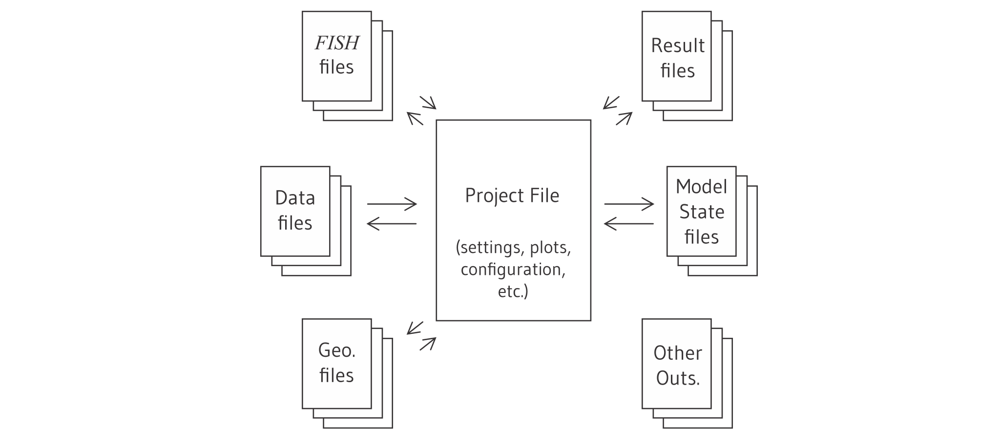

项目

图 1：项目文件跟踪打开到程序中或在程序中创建的文件，以及程序输出的文件。注意，还有一些其他程序输出（绘图位图、导出的数据表等）不受项目跟踪。
建模过程按项目进行组织。项目包含在一个基于文本的文件中，该文件承担以下工作。
- 跟踪所有输入文件（这主要是由 调用数据文件（
program call） 命令处理的任何文件，或使用 i 打开到项目（Open Into Project） 对话框打开到项目中的文件）- 跟踪所有输出文件（这主要是所有已保存模型状态）
- 跟踪/指示程序中所有输入和输出文件的当前状态（哪些数据文件已打开、哪个模型状态是当前状态等）
- 存储项目设置
- 存储程序布局
- 存储“项目”对象（这是一系列项目项，包括绘图和命名过滤器）
- 设置工作目录
- 存储程序环境信息（例如，程序名称、版本和修订信息）
请记住，项目所跟踪的文件并不嵌入在项目之中。在程序之外移动项目文件会破坏项目所维护的链接。对于项目跟踪的项目项，最好在程序内完成文件管理任务（移动或重命名（renaming））。
程序启动时，可以设置为打开最近使用的项目或启动一个新项目。用户可以在 选项对话框（Options dialog） 的“启动”部分设置首选选项。
菜单中的 命令是一个实用工具，用于将项目（项目文件及其跟踪的资源）打包（packaging projects）为单个压缩归档文件。打包文件（bundle file） 可用于在用户之间转移项目、获取技术支持或进行归档。
| 这些内容对您有帮助吗？… | FLAC3D © 2019, Itasca | 原文更新于 2020 年 10 月 8 日 |